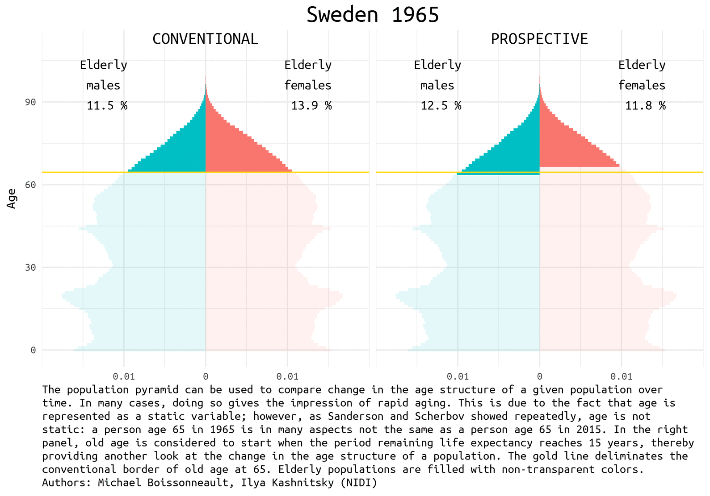
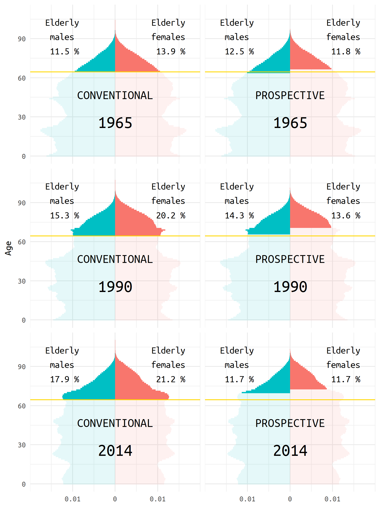

![]()
# load packages
library(tidyverse)
library(extrafont)
myfont <- "Ubuntu Mono"
# download data
df_swe <- read_csv("http://www.rostock-retreat.org/files/application2017/SWE.csv")
# copy at https://ikashnitsky.github.io/doc/misc/application-rostock-retreat/SWE.csv
# define the selection of years to visualize
years <- c(seq(1965, 2010, 5),2014)
df <- df_swe %>% select(Year, Sex, Age, Exposure, ex) %>%
filter(Year %in% years) %>%
mutate(old_c = Age >= 65,
old_p = ex <= 15) %>%
gather("type", "old", contains("old")) %>%
group_by(Year, Sex, type) %>%
mutate(share = Exposure / sum(Exposure)) %>%
ungroup() %>%
mutate(share = ifelse(Sex == 'f', share, -share))
names(df) <- names(df) %>% tolower()
df_old <- df %>% filter(old == T) %>%
group_by(year, sex, type, old) %>%
summarise(cum_old = sum(share)) %>%
ungroup() 
This post is about illustrating the concept of prospective ageing, a relatively fresh approach in demography to refine our understanding of population ageing. This visualization was created in collaboration with my colleague Michael Boissonneault: (mostly) his idea and (mostly) my implementation. The animated visualization builds upon Michael’s viz prepared for the submission to the highly anticipated event at the end June 2017 – Rostock Retreat Visualization. My visualization of the provided Swedish dataset can be found in the previous post.
Prospective ageing
Over the past decades the alarmist views of the upcoming population ageing disaster became widely spread. True, with the growing number of countries approaching the ending of the Demographic Transition, the average/median age of their population increases rapidly, which is something unprecedented in the documented human history. But does that imply an unbearable burden of elderly population in the nearest future? Not necessarily.
The demographic prospects depend a lot on how we define ageing. Quite recently Waren Sanderson and Sergei Scherbov proposed 1 2 a new way to look at population ageing, they called it Prospective Ageing. The underlying idea is really simple – age is not static: a person aged 65 (the conventional border deliminating elderly population) today is in many aspects not the same as a person ages 65 half a century ago. Health and lifespan improved a lot in the last decades, meaning that today people generally have much more remaining years of life at the moment of being recognized as elderly by the conventional standards. Thus, Sanderson and Scherbov proposed to define elderly population based on the estimation of the expected remaining length of life rather than years lived. Such a refined view of population ageing disqualifies the alarmist claims of the approaching demographic collapse. The would be paradoxical title of one the latest papers of Sanderson and Scherbov 3 summarizes the phenomenon nicely: Faster Increases in Human Life Expectancy Could Lead to Slower Population Aging.
1 Sanderson W, Scherbov S. 2005. Average remaining lifetimes can increase as human populations age. Nature 435: 811–813 DOI: 10.1038/nature03593
2 Sanderson W, Scherbov S. 2010. Remeasuring Aging. Science 329: 1287–1288 DOI: 10.1126/science.1193647
3 Sanderson WC, Scherbov S. 2015. Faster Increases in Human Life Expectancy Could Lead to Slower Population Aging. PLoS ONE 10: e0121922 DOI: 10.1371/journal.pone.0121922
Of course, the choice of the new ageing threshold is a rather arbitrary question 4. It became usual to define this threshold at the remaining life expectancy of 15 years.
4 See the working paper of my colleagues devoted to this question
Population pyramids for Sweden
Population pyramid is a simple and nice way to represent population composition and to compare changes in the age structure of a given population over time. We show the difference between conventional and prospective approach to the definition of the elderly population using Swedish data for the last half a century. Sweden is a natural choice for demographers aiming to play with rich and reliable data.
The data used for this visualization comes from Human Mortality Database. It can be easily accessed from an R session using HMDHFDplus package by Tim Riffe (for examples see my previous posts - one and two). For this exercise, I will use the dataset for Sweden that was provided for an application task for Rostock Retreat Visualization 5.
5 By using this data, I agree to the user agreement
Data preparation
Visualization
Let’s first have a look at the pyramids in 1965, 1990, and 2014 (the latest available year).
gg_three <- ggplot(df %>% filter(year %in% c(1965, 1990, 2014))) +
geom_bar(aes(x = age, y = share, fill = sex, alpha = old),
stat = 'identity', width = 1)+
geom_vline(xintercept = 64.5, size = .5, color = 'gold')+
scale_y_continuous(breaks = c(-.01, 0, .01), labels = c(.01, 0, .01),
limits = c(-.02, .02), expand = c(0,0))+
facet_grid(year~type) +
theme_minimal(base_family = 'Ubuntu Mono') +
theme(strip.text = element_blank(),
legend.position = 'none',
plot.title = element_text(hjust = 0.5, size = 20),
plot.caption = element_text(hjust = 0, size = 10)) +
coord_flip() +
labs(y = NULL,
x = 'Age') +
geom_text(data = data_frame(type = c('old_c', 'old_p'),
label = c('CONVENTIONAL', 'PROSPECTIVE')),
aes(label = label),
y = 0, x = 50, size = 5, vjust = 1,
family = 'Ubuntu Mono') +
geom_text(data = df_old %>% filter(year %in% c(1965, 1990, 2014), sex == 'f'),
aes(label = year),
y = 0, x = 30, vjust = 1, hjust = .5, size = 7,
family = 'Ubuntu Mono') +
geom_text(data = df_old %>% filter(year %in% c(1965, 1990, 2014), sex == 'f'),
aes(label = paste('Elderly\nfemales\n', round(cum_old*100,1), '%')),
y = .0125, x = 105, vjust = 1, hjust = .5, size = 4,
family = 'Ubuntu Mono') +
geom_text(data = df_old %>% filter(year %in% c(1965, 1990, 2014), sex == 'm'),
aes(label = paste('Elderly\nmales\n', round(-cum_old*100,1), '%')),
y = -.0125, x = 105, vjust = 1, hjust = .5, size = 4,
family = 'Ubuntu Mono')
#ggsave("figures/three-years.png", gg_three, width = 6, height = 8)
Animated pyramid
To get an animated pyramid I simply saved all the separate plots and then use the very convenient free online tool to make an animated image - GIFCreator 6.
6 I did try to play with the package gganimate, though it produced a strange output.
note <- 'The population pyramid can be used to compare change in the age structure of a given population over time. In many cases, doing so gives the impression of rapid aging. This is due to the fact that age is represented as a static variable; however, as Sanderson and Scherbov showed repeatedly, age is not static: a person age 65 in 1965 is in many aspects not the same as a person age 65 in 2015. In the right panel, old age is considered to start when the period remaining life expectancy reaches 15 years, thereby providing another look at the change in the age structure of a population. The gold line deliminates the conventional border of old age at 65. Elderly populations are filled with non-transparent colors. Authors: Michael Boissonneault, Ilya Kashnitsky (NIDI)'
# I will store the plots in a list
plots <- list()
for (i in 1:length(years)){
gg <- ggplot(df %>% filter(year == years[[i]])) +
geom_bar(aes(x = age, y = share, fill = sex, alpha = old),
stat = 'identity', width = 1)+
geom_vline(xintercept = 64.5, size = .5, color = 'gold')+
scale_y_continuous(breaks = c(-.01, 0, .01), labels = c(.01, 0, .01),
limits = c(-.02, .02), expand = c(0,0))+
facet_wrap(~type, ncol = 2) +
theme_minimal(base_family = 'Ubuntu Mono') +
theme(strip.text = element_blank(),
legend.position = 'none',
plot.title = element_text(hjust = 0.5, size = 20),
plot.caption = element_text(hjust = 0, size = 10)) +
coord_flip() +
labs(title = paste("Sweden", years[i]),
caption = paste(strwrap(note, width = 106), collapse = '\n'),
y = NULL,
x = 'Age') +
geom_text(data = data_frame(type = c('old_c', 'old_p'),
label = c('CONVENTIONAL', 'PROSPECTIVE')),
aes(label = label),
y = 0, x = 115, size = 5, vjust = 1,
family = 'Ubuntu Mono') +
geom_text(data = df_old %>% filter(year == years[[i]], sex == 'f'),
aes(label = paste('Elderly\nfemales\n', round(cum_old*100,1), '%')),
y = .0125, x = 105, vjust = 1, hjust = .5, size = 4,
family = 'Ubuntu Mono') +
geom_text(data = df_old %>% filter(year == years[[i]], sex == 'm'),
aes(label = paste('Elderly\nmales\n', round(-cum_old*100,1), '%')),
y = -.0125, x = 105, vjust = 1, hjust = .5, size = 4,
family = 'Ubuntu Mono')
plots[[i]] <- gg
}
# # a loop to save the plots
# for (i in 1:length(years)){
# ggsave(paste0('figures/swe-', years[i], '.png'), plots[[i]],
# width = 8, height = 5.6)
# }